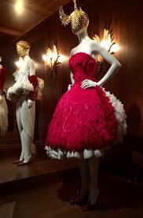
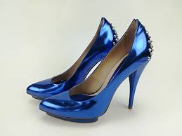
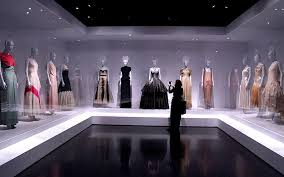
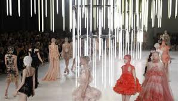
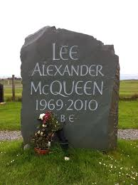

Before
Lee Alexander McQueen Was borin in 1969 in a public house in London Lewisham District. His father was a cab driver and mother was a school teacherHe had five siblings and was called Lee by his friends and family. He was teased at school and often struggled making friends.
A New Life
Alexander dropped out of school at 16 and started working at a mens suit tailoring. Alexander was ready to up his career and so he began to work for two costume designers. This is where he came to love the flare that he would later use in his own designs. 
Alexander left to Milan Italy to work as a design assistant to Romeo Gigili for a short period of time. When he returned to London Alexander was able to enroll at Central Saint Martin's College. In 1992 He was able to graduate in fashion design.
Dream
After graduation Alexander started his own buisness in womens clothing. He had a huge success and only four years later he was the Cheif Designerof a Louis Vuitton French couture house. 
Even though He pushed his designs there to the next level he still felt held back.
Later he admitted that he yes treated the job poorly but that he had found it boring and lacking creativity. Even without all his effort he still won British Designer of the Year in 1996, 1997, and 2001. 
Gucci bought into Alexanders private company in 2000, and in 2003 Alexander left his job. With the help of Gucci Alexander was gaining more popularity thatn ever before 
He poured even more of his time and effort into his house.
Memory
Sadly in 2010 Alexanders mother passed away. This broke Alexander's heart and just one day before her funeral Alexander was found. He had found it to hard to go on. Many were devasted by his passing and proud of what he had acomplished. Having come from a poverished family and rising to riches and never having shyed away from that aspect, he had shown the world that through hard work and dedication anything can truly be done.